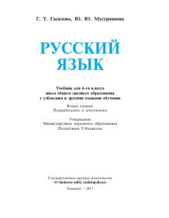

RT6-sinf o'quvchilari uchun rus tili darsligi.
Mazkur darslik o'zbek va boshqa tillarda o'qitiladigan umumiy o'rta ta'lim maktablarining 6-sinf o'quvchilari uchun mo'ljallangan rus tili fani bo'yicha rasmiy o'quv qo'llanmadir. Kitobda nutq odobi, ismlar, otlar va ularning yasalishi, shuningdek grammatik qoidalar yuzasidan mashqlar berilgan.